An elementary proof of Euler’s product expansion
for the sine
Sumit Kumar Jha
IIIT-Hyderabad, India
Email: kumarjha.sumit@research.iiit.ac.in
March 1, 2022
Euler’s infinite product for the sine is, for x ∈ ℝ, the identity
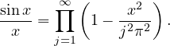 In
the article [1], the author gives an elementary proof of the Euler’s product expansion
for the sine using a trigonometric identity and Tannery’s theorem for infinite
products. However, the author also makes use of the Wallis’s product formula. Our
proof here makes use of only trigonometric identities, and not Wallis’s product
formula, which is often, obtained from the Euler’s product expansion for the
sine.
We begin with the following identity.
Theorem 1. For all complex numbers z and all integers n, we have
Proof. We can write
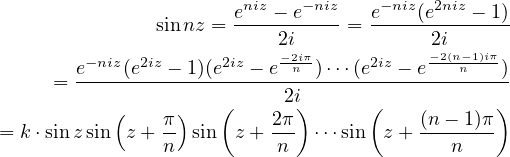
where
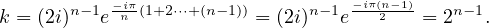 __
Corollary 1. For all integers n, we have
Proof. To obtain the result we divide both sides (1) by sinz and let z → 0. __
Now, letting n = 2m + 1 in (1), we get
Now, from equation (2) we can conclude
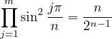.
Using this and replacing z by z∕n, we obtain
Next, we state and use the Tannery’s theorem for infinite products
Theorem 2 (Tannery’s theorem for infinite products, [2]). For all natural
numbers n ∈ ℕ, let
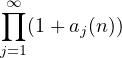 be a convergent infinte product. If for all j, lim
n→∞aj(
n) =
aj and |aj(
n)
|≤ Mj
for all n, where the series ∑
Mj converges, then
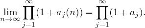
Now, let
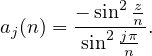
Now, since, for 0 ≤ x ≤ π∕2,
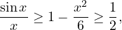 we
have, for 1 ≤ j ≤ n∕2,
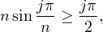
that is,
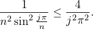
But, since,
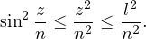
where l be the constant > z for given real z. Thus,
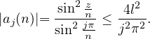
Now, using the Tannery’s theorem for infinite products, we can write
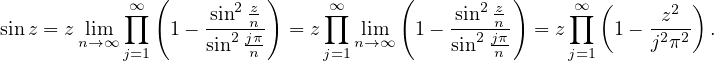
References
[1] Óscar Ciaurri (2015) Euler’s Product Expansion for the Sine: An Elementary
Proof, The American Mathematical Monthly, 122:7, 693-695, DOI:
10.4169/amer.math.monthly.122.7.693
[2] Paul Loya, Real Analysis 1 notes, Page 322,
Link: http://people.math.binghamton.edu/dikran/478/Ch6.pdf.